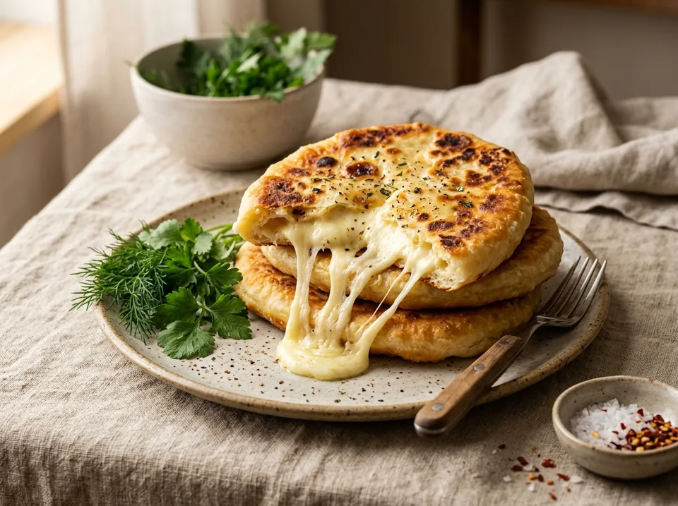
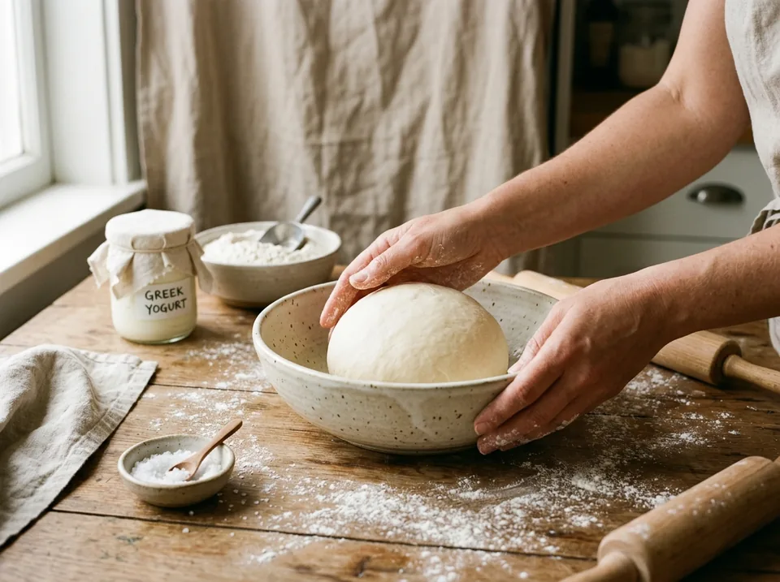
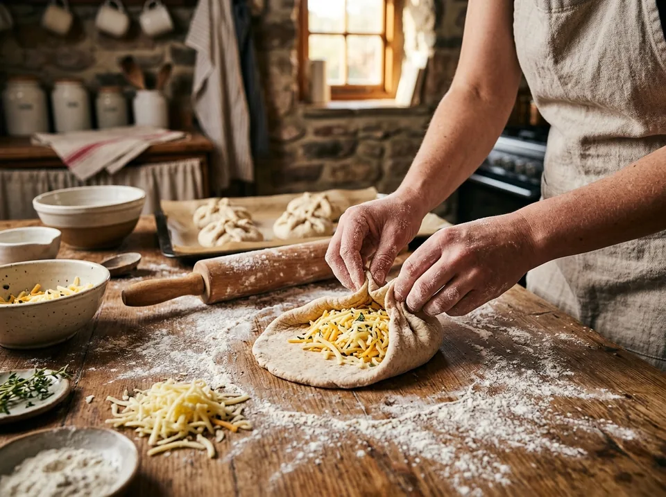
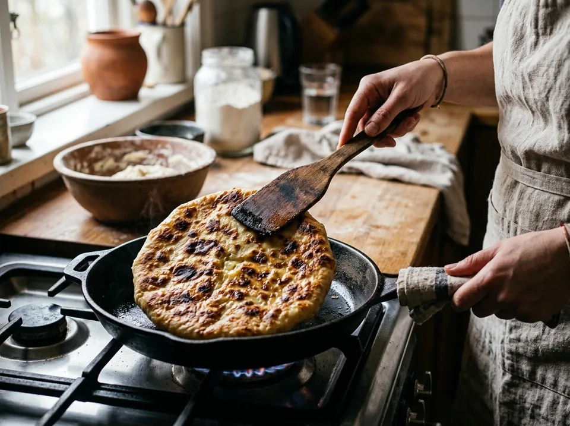

Завтраки · 15–20 минут
ПП-хачапури с сыром
Быстрые сырные лепешки с тягучей начинкой на белковом тесте из йогурта Teos 2% и высокобелкового сыра GENIfit. 96.4 г белка на всю партию из 6 штук!
К ингредиентам
Ингредиенты · 6 порций
- Пшеничная мука в тесто — 180 г
- Пшеничная мука на припыл — 20 г (для стола и скалки)
- Греческий йогурт «Савушкин Teos» 2% — 250 г (1 банка)
- Высокобелковый сыр GENIfit Protein — 180 г (1 пачка, натереть)
- Соль мелкая — 1/3 ч. л. (по вкусу)
- Растительное масло — пару капель (~3 г) для смазывания сковороды
Пищевая ценность
На 100 г: 223.5 ккал · Б 16.6 г · Ж 5.5 г · У 26.2 г
Шаг за шагом
Замешивание белкового теста
В глубокой миске соедините 180 г пшеничной муки, 250 г греческого йогурта «Савушкин Teos» 2% (целая банка) и щепотку соли. Тщательно перемешайте сначала ложкой, а затем вымешивайте руками 1–2 минуты до состояния мягкого эластичного колобка теста.

Подготовка сыра GENIfit и деление теста
Натрите всю пачку высокобелкового сыра GENIfit (180 г) на тёрке (в пачке рекордные 56 г белка!). Готовый колобок теста разделите ножом или скребком на 6 равных частей (примерно по 70–72 г теста на кусочек).
Формирование хачапури (мешочек и раскатка)
Используйте 20 г муки для припыления рабочего стола и скалки. Раскатайте кусочек теста в тонкую круглую лепёшку. В центр выложите ровно 30 г натёртого сыра GENIfit. Заверните края теста к центру «мешочком» и плотно защипните. Переверните швом вниз, припылите скалку и аккуратно раскатайте с двух сторон в тонкую лепёшку толщиной около 5–7 мм.

Обжаривание на сковороде (2–3 мин с каждой стороны)
Хорошо разогрейте антипригарную сковороду и смажьте парой капель растительного масла. Выложите хачапури и обжаривайте на среднем огне по 2–3 минуты с каждой стороны до аппетитной румяной корочки с подпалинами. Сыр внутри моментально плавится и тянется!

Подача в горячем виде
Подавайте хачапури сразу со сковороды горячими. В одной штуке — 16.1 г чистого белка, а в сытной порции из 2 штук — рекордные 32.1 г белка!